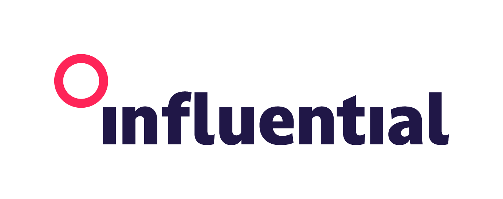

Logos
Three approved versions of the Influential mark. Pick the one that fits your background, preview it, then copy or download. Per the guidelines the logo is never redrawn, distorted, or recoloured beyond these versions.

Primary (Red)
The signature mark: pink-red circle with the navy wordmark. Use on white and light backgrounds.
Version
Preview background
Usage rules. Never redraw, distort, or recolour the mark. Keep a minimum exclusion zone clear of other text and imagery. When pairing the logo with copy, align the text to the lettering in the wordmark.
SVG/vector download will switch on once the source files are added to the asset library.
Colours
The full Influential palette. Each sector has its own vibrant colour. Click any swatch to copy its hex code. Always pick the background and copy combination with the greatest contrast.
Core / Neutral
Vibrant / Sector
Pastel & Deep tones
Fonts
Effra is the primary typeface. Body copy is always set at exactly 50% of the headline size.
Primary typeface
Effra Bold
Effra Light for body copy. Clean, confident, and made to move.
CSS stack:
Secondary / fallback (when Effra is unavailable)
Segoe UI Bold
Segoe UI Light for body copy when Effra can't be used.